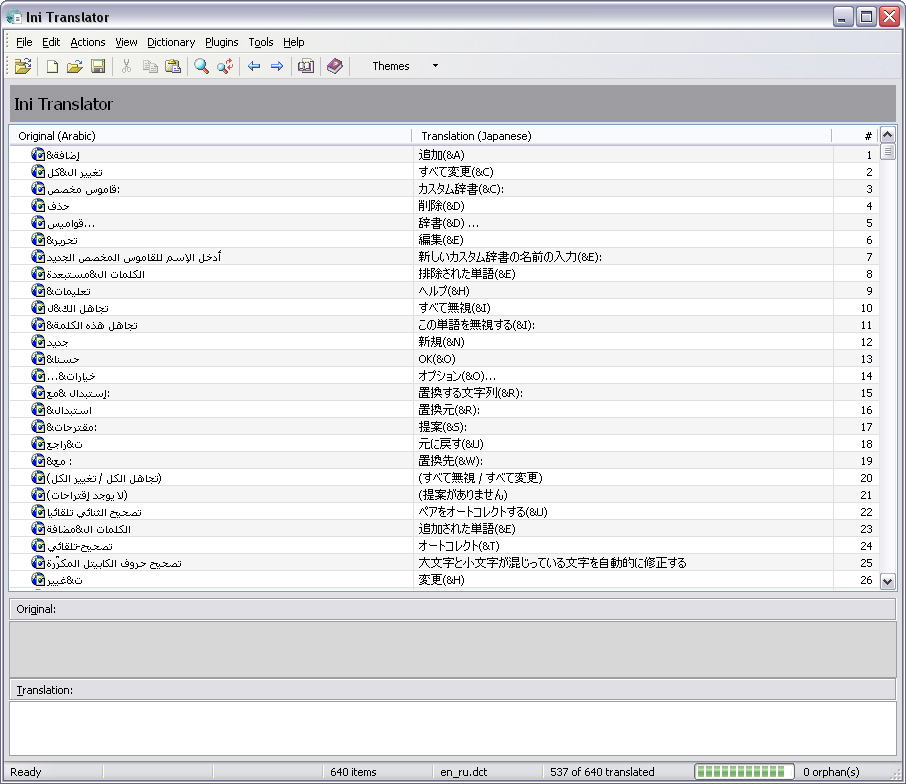

Ini Translator is a utility program to translate ini-style language files. These files are used by various software programs (Inno Setup, ISTool, FlashGet and Wallpaper Sequencer to name a few). This help file is a short description on how the program works and what functions it provides.

The main window contains (from top to bottom): a menu and a toolbar at the top, a detail pane displaying info about the currently selected item in the item list, a field with the current original text and a field with the current translation text and a status bar with various information about the currently loaded files.